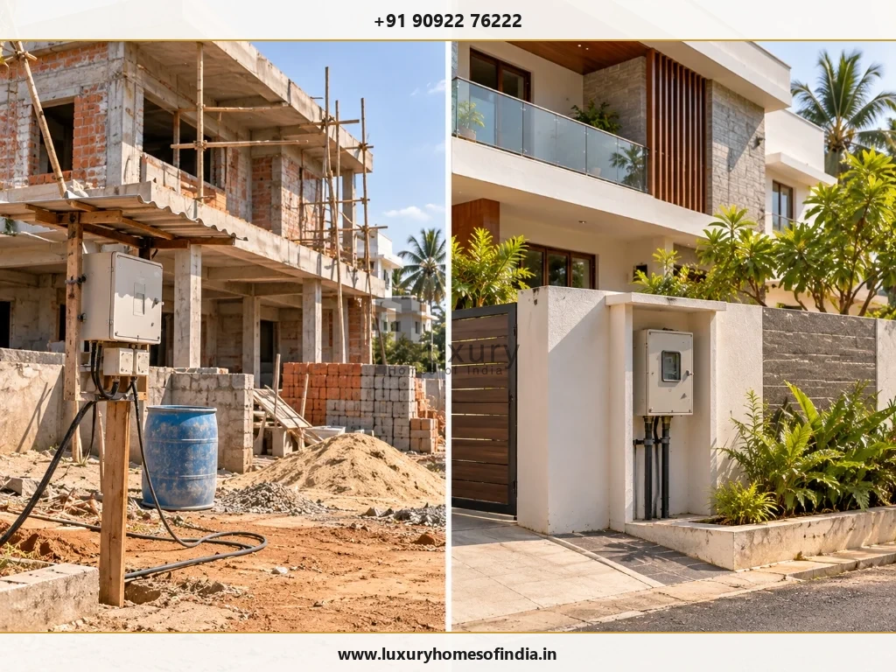
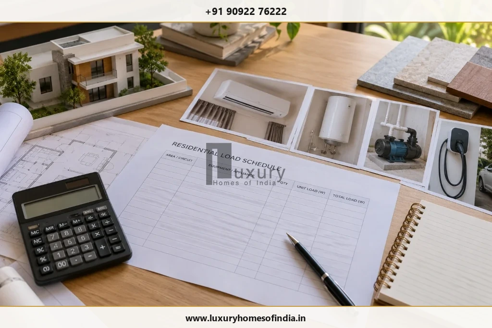
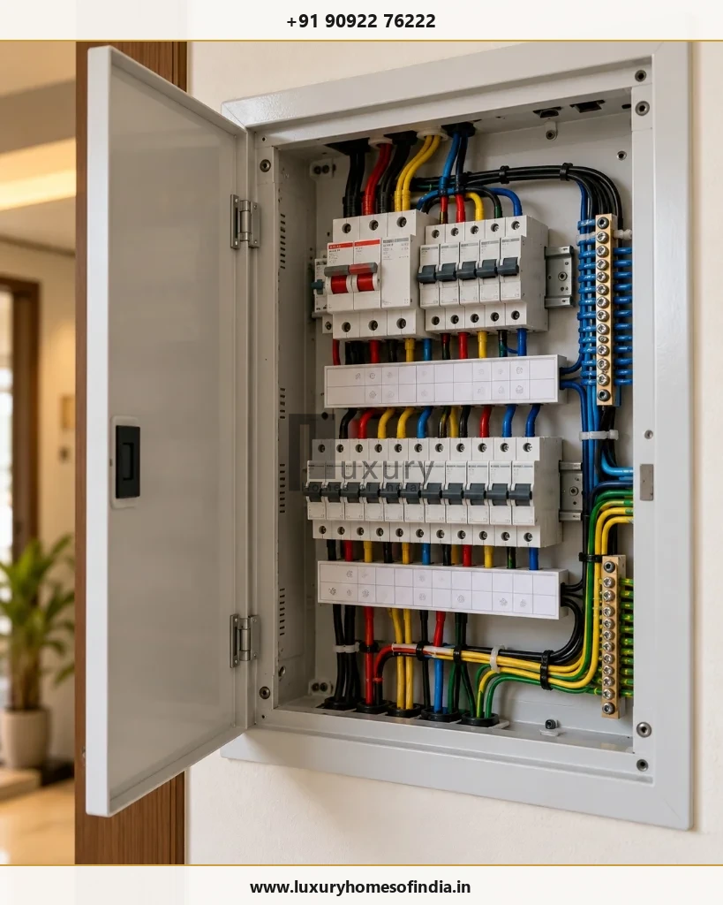
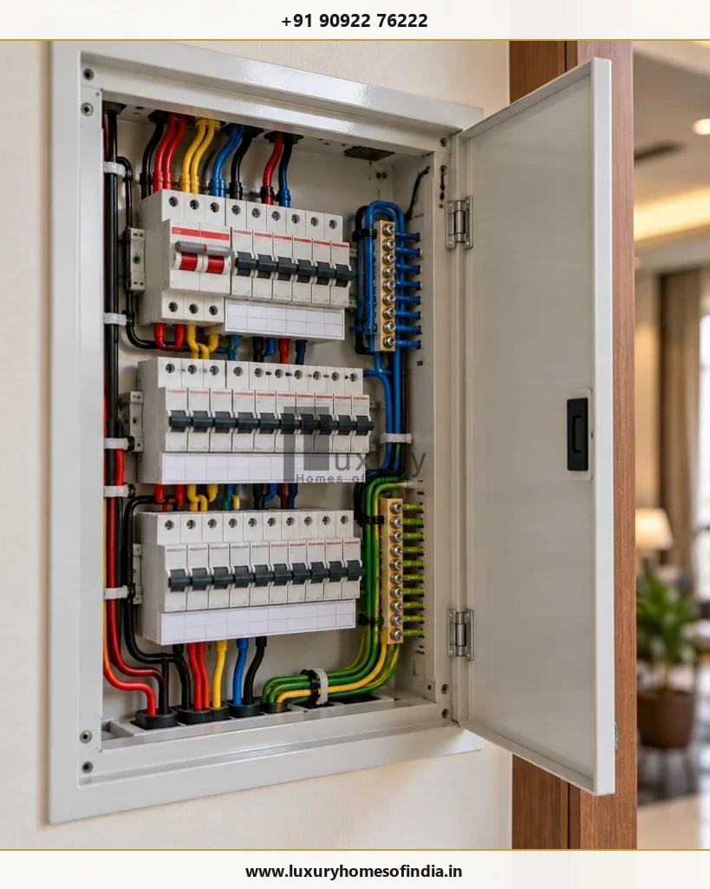

Getting an EB connection for a new house in Chennai involves more than completing the internal electrical wiring. Homeowners need to identify the appropriate electricity service, prepare the required property and applicant details, arrange the electrical installation, submit the application and complete the utility's applicable verification and payment steps. The total charges depend on the service category, sanctioned load and any additional work required, so a generic online estimate should not be treated as a confirmed amount. For a house under construction, the most practical approach is to coordinate the proposed electrical load, meter location, service-entry route and external works before the final stages of construction. This guide explains how to prepare for a new domestic connection, which records to keep ready, what to check in a demand notice and how to avoid preventable delays. Always verify the current application process, technical requirements, fees and timelines with the authorised Tamil Nadu electricity utility.
1. Who provides a new EB connection in Chennai?
Homeowners commonly use the terms EB connection, TNEB and TANGEDCO when discussing electricity service in Tamil Nadu. The responsible distribution utility and the correct application channel should be confirmed through the current official portal before an application is submitted.
Official Tamil Nadu Electricity Utility Portals
Start with the official utility portal: Tamil Nadu Electricity Utility Portal (TANGEDCO)
Or access via National Portal: Government of India Service Directory Entry for TANGEDCO
Check that the selected service is intended for your property and connection category. Portal names, service labels and application procedures can change, so avoid relying exclusively on old screenshots, third-party instructions or links shared in informal groups.
2. Which EB connection does a new house need?
The correct service depends on the intended use of the supply and the utility's current rules.

Permanent domestic connection
For a completed home intended for residential occupation, investigate the applicable new domestic service category. Confirm the permitted load, phase arrangement, documentation and technical requirements before selecting the application option.
Temporary construction connection
A temporary supply may be relevant while building work is under way. It should not be assumed to be interchangeable with a permanent domestic connection. If a temporary connection already exists, ask the utility which formalities apply before permanent supply can be released.
Additional load or phase conversion
Increasing the sanctioned load of an existing connection or changing its phase arrangement is different from applying for an entirely new service. The appropriate request depends on the existing connection and the revised electrical demand.
3. Documents to prepare before applying
Prepare the information relevant to the application, then compare it with the current official checklist. The following table is a preparation guide, not a substitute for the utility's prescribed document list.
| Record or Information | Why to Prepare It |
|---|---|
| Applicant's identity details | To complete the applicant information requested by the utility |
| Ownership or occupancy proof | To establish the applicant's relationship to the premises |
| Full property address | To identify the correct property and responsible service area |
| Property or building records | To support property verification when requested |
| Selected service category | To ensure the request matches the intended use |
| Electrical load and phase details | To describe the required service accurately |
| Electrical installation test report | To support the applicable technical safety checks |
| Owner's consent / declaration | To address requirements where applicant is not sole owner |
Do not assume that a sale deed, building approval or property-tax receipt alone will satisfy every application. The applicable documents depend on the service category and current requirements.
Before submission, check the portal's instructions for file formats, file-size limits, declarations and mandatory fields. Keep copies of the submitted records, application acknowledgement and payment receipts.
4. How to apply for an EB connection for a new house in Chennai
Step 1: Confirm the correct service category
Use the current official utility portal to identify the appropriate application for the property. If the site is still under construction, already has temporary supply or forms part of a multi-dwelling development, confirm the applicable process before proceeding.
Step 2: Have the electrical load assessed
Ask a qualified electrical professional to prepare a load schedule based on the planned equipment and expected use of the house.
Consider significant loads such as air-conditioning systems, water heaters, cooking appliances, pumps, lifts, EV chargers and other specialist equipment. The request should reflect the assessed requirement and the utility's applicable rules rather than the house's floor area alone.

Step 3: Coordinate the installation and service entry
Plan the service-entry route, meter position, distribution board, earthing and protective devices with the electrical professional. Check the applicable utility requirements for the installation and any declarations or test records needed before supply can be released.
Coordinate these details with the architect and construction team. This is particularly important when the meter enclosure, cable route or access requirements could affect compound walls, gates, paving or finished external cladding.
Step 4: Complete and submit the application
Enter the applicant and property details accurately. Select the appropriate service category and provide the requested load, phase and supporting documents.
Review the application before submission. Save the acknowledgement or reference number so that you can follow up on the request.
Step 5: Respond to verification or inspection requests
Follow the utility's instructions for document verification, site access and electrical checks. If technical information is requested, coordinate with the responsible electrical professional.
Correct inconsistencies in the property address, applicant details or supporting documents promptly.
Step 6: Review the official demand notice
Read the demand notice carefully before making payment. Confirm the charge categories, amounts and any additional work described in the estimate.
If service-line extension or other infrastructure work is proposed, request an explanation of the scope and basis of the charges when clarification is needed. Do not assume that every possible charge applies to every property.
Step 7: Complete the release process
Follow the utility's instructions for completing formalities, payments, inspection and meter installation. Retain the relevant receipts and connection records.
Do not use an unauthorised supply or interfere with utility equipment. Before occupation, have a qualified electrical professional verify the installation and the readiness of essential circuits.
5. How much does a new EB connection cost in Chennai?
The total cost cannot be determined reliably from a generic figure alone. It depends on the applicable service category, sanctioned load, current charges and any additional work required for the particular property.
Depending on the applicable rules and connection, a demand may include items such as:
- Application or registration charges.
- Service connection charges.
- Applicable deposits or meter-related charges.
- Development or infrastructure charges, where applicable.
- An estimate for authorised service-line extension or other work, where required.
- Applicable taxes or statutory amounts.
Not every item applies to every application. The official demand notice is the basis for determining what you must pay.
How to review the demand notice
Check the following before payment:
- Does the notice identify the correct applicant, property and service category?
- Is the requested load consistent with the intended service?
- Are the charge categories and amounts clearly stated?
- Is additional infrastructure work described where relevant?
- Do you know how to obtain clarification or raise a grievance through the official channel?
Two houses on the same street may receive different demands because their service requirements or existing infrastructure differ. Another homeowner's payment receipt can provide context, but it is not proof of the current charges for your property.
6. Should you choose single-phase or three-phase supply?
Choose the supply arrangement based on the assessed electrical demand and the utility's current requirements, not on the architectural appearance or floor area of the house.
A qualified electrical professional should consider:
- Expected simultaneous demand.
- The number and capacity of air-conditioning units.
- Water heaters, pumps and other significant loads.
- Lifts, EV chargers and specialist equipment.
- Circuit distribution and the planned electrical installation.
- Applicable utility eligibility and technical requirements.
Three-phase supply may suit some homes with higher electrical demand, but it is not automatically necessary for every large residence. Confirm the appropriate arrangement before finalising the service request and meter location.
7. Electrical safety and readiness before connection
A connection application is only one part of preparing a home for safe electrical use.

Earthing and protective devices
Have the earthing system and protective devices checked by a qualified electrical professional against applicable requirements. Do not treat a visual inspection alone as proof of electrical safety.
Distribution board and circuit planning
Ensure the distribution board and circuits are appropriate for the designed installation. Consider anticipated equipment and future requirements during design, while avoiding unsupported assumptions about the capacity the utility will permit.
Meter position and access
Coordinate the proposed meter position with the utility's requirements and the building layout. Ensure that gates, landscaping, paving and external finishes will not obstruct required access.
Outdoor and wet-area installations
Terraces, bathrooms, outdoor lighting, pumps and exposed locations require suitable equipment and protection. Ask the responsible electrical professional to verify that the installation is appropriate for its environment.
8. Coordinate the EB connection with construction and handover
For a new home, electrical service planning should be coordinated with the broader construction programme. Leaving the meter position or service-entry route until external finishes are complete can lead to avoidable rework.

EB Connection Construction Checklist
- Confirm the intended service category.
- Have the electrical load assessed.
- Prepare the applicant and property records.
- Confirm the meter location and service-entry route.
- Coordinate the electrical installation and required documentation.
- Submit the application and retain its reference number.
- Review the official demand notice.
- Complete required payments and respond to verification requests.
- Confirm the meter installation and release of supply.
- Arrange professional checks before occupation.
Building a Turnkey Luxury Home in Chennai?
Ensure complete electrical, plumbing, and structural coordination from architectural planning through utility handover. Partner with LHI's master engineering team.
Schedule a Consultation9. Common mistakes to avoid
- Confusing temporary and permanent supply: Confirm the correct service category and the formalities needed to obtain permanent supply.
- Choosing a load without an assessment: Base the request on the planned electrical demand and applicable utility requirements.
- Submitting incomplete details: Review the property address, applicant information and supporting documents before submission.
- Assuming charges are fixed for every house: Use the official demand notice and seek clarification about additional work where necessary.
- Leaving the meter location until the end: Coordinate the service entry and meter access before external finishes are completed.
- Treating completed wiring as proof of readiness: Confirm the required safety checks, records and utility formalities.
- Using unverified payment links: Use authorised channels and retain payment acknowledgements.
10. Frequently asked questions
Plan the EB connection before your house is ready for occupation
A new electricity connection is easier to coordinate when the electrical load, service-entry route, meter location and required documents are considered early in construction. Confirm the appropriate service category, prepare the installation and follow the utility's current requirements before scheduling the final stages of handover.
If you are building a new home in Chennai, discuss the electrical service plan with your architect, construction team and qualified electrical professional. Verify current connection rules, technical requirements, charges and timelines directly with the authorised utility.
Disclaimer: This article provides general homeowner information. Connection categories, technical requirements, charges and processing times should be verified against current official rules before application.